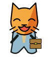
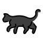
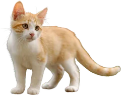
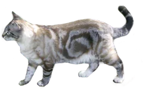
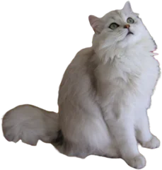
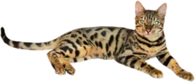
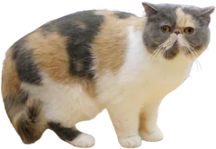
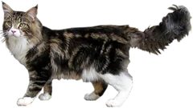

現場を巡回する猫
OpenMoji
Cat (1F408) と Helmet with White Cross (26D1) を合成し、ヘルメットを黄色に変更。
ページの隅を散歩する10匹の猫。働き猫から本物の猫まで、毎回少しずつ違う顔ぶれです。フッターの「猫を呼ぶ」で今すぐ会えます。「猫の散歩」で自動登場を止められます。
OpenMoji
Cat (1F408) と Helmet with White Cross (26D1) を合成し、ヘルメットを黄色に変更。
OpenMoji
Cat Face (1F431) と Laptop (1F4BB) を合成し、胴体を追加。

OpenMoji
Grinning Cat with Smiling Eyes (1F638) と Briefcase (1F4BC) を合成し、胴体を追加。

OpenMoji
Black Cat (1F408-200D-2B1B)。表示用にSVGを整理。

Tesseractic
元の透過画像を縮小・WebPに変換。

Cassie J
元の透過画像を縮小・WebPに変換。

Chatterie des Millenovæ
元の透過画像を縮小・WebPに変換。

V. Sauvaget
元の透過画像を縮小・WebPに変換。

Heikki Siltala / catza.net
元の透過画像を縮小・WebPに変換。

Lengoma / Abujoy (背景透過)
元の透過画像を縮小・WebPに変換。